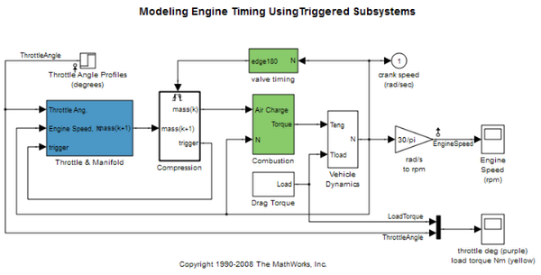
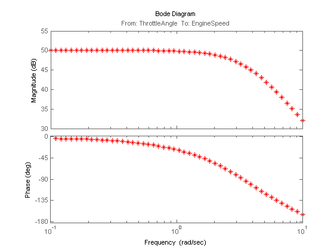
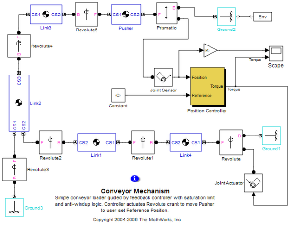
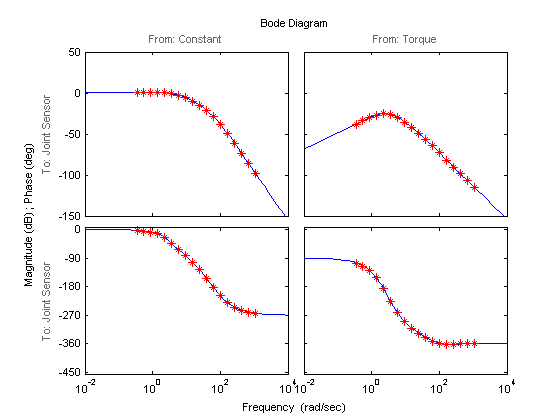

Speeding Up Frequency Response Estimation Using Parallel Computing
This demo illustrates how to use parallel computing for speeding up frequency response estimation of Simulink® models. In some scenarios, the command FRESTIMATE performs multiple Simulink® simulations to estimate the frequency response of a Simulink® model. You can distribute these simulations to a pool of MATLAB® workers by using Parallel Computing Toolbox™.
This demo requires Parallel Computing Toolbox™. You can optionally use MATLAB Distributed Computing Server™ to run simulations on a computer cluster. This demo uses the local worker functionality available in Parallel Computing Toolbox™.
Contents
Speeding up Simulink® Simulations Performed by FRESTIMATE
When you compute frequency response using the FRESTIMATE command, the majority of computation time is usually spent in Simulink® simulations. To reduce the total simulation time, you can:
1. Use rapid accelerator mode. See the "linearization validation demonstration" as an example of using rapid accelerator mode with the FRESTIMATE command. Use this method when FRESTIMATE performs only one Simulink® simulation.
2. Distribute simulations among workers in a MATLAB® pool. Use this method when FRESTIMATE performs multiple Simulink® simulations. FRESTIMATE performs more than one Simulink® simulation when you specify the following:
- A Sinestream input signal with "SimulationOrder" parameter set to "OneAtATime". In this case, each frequency in the Sinestream signal is simulated separately.
- Linearization I/O points with more than one input point or a non-scalar input point. In this case, each linearization input point or each channel in a non-scalar linearization input point yields a separate Simulink® simulation.
Note that FRESTIMATE command using parallel computing option also supports normal, accelerator and rapid accelerator modes.
Configuring a MATLAB® Pool
To use parallel computing to speed up frequency response estimation, configure and start a pool of MATLAB® workers before you run the FRESTIMATE command.
Use the matlabpool command to check if a MATLAB® pool is open, and then open a local pool on your multicore desktop. This requires Parallel Computing Toolbox™.
if matlabpool('size') == 0 %The matlabpool is not open, so open one matlabpool open local end
Starting matlabpool using the 'local' configuration ... connected to 8 labs.
Distributing Simulink® Simulations for Each Frequency in Sinestream Input
When you use a Sinestream input signal with FRESTIMATE command and you set the "SimulationOrder" parameter to "OneAtATime", each frequency in the Sinestream signal simulates in a separate Simulink® simulation. If you enable the parallel computing option, the simulations corresponding to individual frequencies are distributed among workers in the MATLAB® pool.
scdengine mdl = 'scdengine'; io = getlinio(mdl); in = frest.Sinestream('Frequency',logspace(-1,1,50),'Amplitude',1e-3,... 'SimulationOrder','OneAtATime');
In the engine model above, there is a single linearization input point and a single linearization output point. There are 50 frequencies in the Sinestream signal and the FRESTIMATE command performs 50 separate Simulink® simulations, because the "SimulationOrder" parameter is set to "OneAtATime". To enable the parallel computing option for FRESTIMATE to distribute these simulations among workers, create a frequency response estimation options object using the command frestimateOptions and set the "UseParallel" parameter to "on". Use this object as input argument for FRESTIMATE.
opt = frestimateOptions('UseParallel','on'); sysest = frestimate(mdl,io,in,opt); bode(sysest,'r*')
The time it takes for the FRESTIMATE command to run to completion with and without parallel computing option enabled is shown below. A PC with Intel® Core(TM)2 Quad 2.4GHz processor and 4GB of RAM is used.
| Parallel Computing Option | Time(secs) | Speedup |
| Disabled | 43.69 | 1 |
| Enabled with 2 workers | 25.34 | 1.72 |
| Enabled with 3 workers | 15.46 | 2.83 |
| Enabled with 4 workers | 11.52 | 3.79 |
Parallel computing significantly speeds up the frequency response estimation. The imperfect speedup can be caused by various factors including the overhead from data and code transfer between client and workers and resource competition between worker processes and OS processes. For first simulation (i.e. immediately after opening the pool of MATLAB® workers), Simulink® start-up time can add to the overhead.
bdclose(mdl);
Distributing Simulink® Simulations for Input Channels
When the number of linearization input points or the number of channels in a linearization input point is greater than one, the FRESTIMATE command distributes individual Simulink® simulations corresponding to these input channels among workers in the MATLAB® pool.
scdmechconveyor mdl = 'scdmechconveyor'; io(1) = linio('scdmechconveyor/Constant',1,'in'); io(2) = linio('scdmechconveyor/Position Controller',1,'in'); io(3) = linio('scdmechconveyor/Joint Sensor',1,'out'); % Find the steady state operating point op = findop(mdl,20); % Linearize the system and create input signal using linearization result sys = linearize(mdl,io,op); in = frest.Sinestream(sys);
With the linio commands, you specify two linearization input points, which are both located on scalar Simulink® signals. If you run the FRESTIMATE command to estimate the frequency response for this model, two Simulink® simulations occur, one for each input. If you enable the parallel computing option, the simulations are distributed among workers. Run FRESTIMATE command with parallel computing option enabled and plot the estimation result against analytical linearization:
opt = frestimateOptions('UseParallel','on'); sysest = frestimate(mdl,io,in,op,opt); bodeopts = bodeoptions; bodeopts.PhaseMatching = 'on'; bodeplot(sys,sysest,'r*',bodeopts)
The time it takes for the FRESTIMATE command to run to completion with and without parallel computing option enabled is shown below. A PC with Intel® Core(TM)2 Quad 2.4GHz processor and 4GB of RAM is used.
| Parallel Computing Option | Time(secs) | Speedup |
| Disabled | 56.99 | 1 |
| Enabled with 2 workers | 31.94 | 1.78 |
As in the case of distributing simulations for frequencies, the table shows nearly a two-fold speedup with the parallel computing option enabled. As mentioned before, several factors may contribute to imperfect speedup including data and code transfer between client and workers and resource competition between worker processes and OS processes.
Close the model and the MATLAB® pool:
bdclose(mdl);
matlabpool close;
Sending a stop signal to all the labs ... stopped.